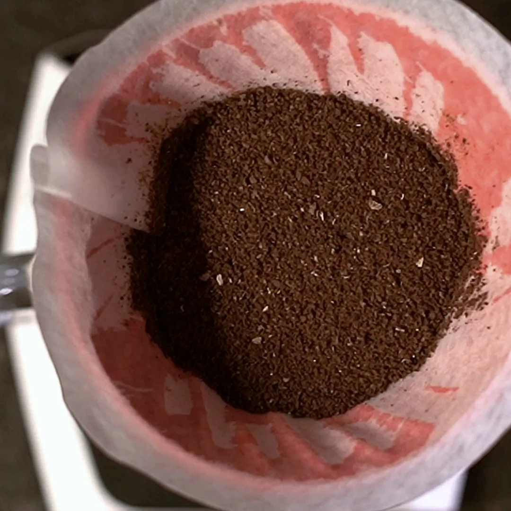
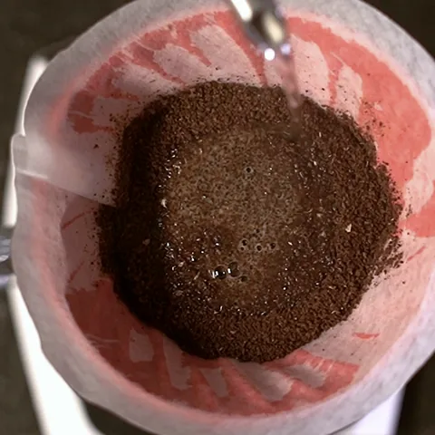
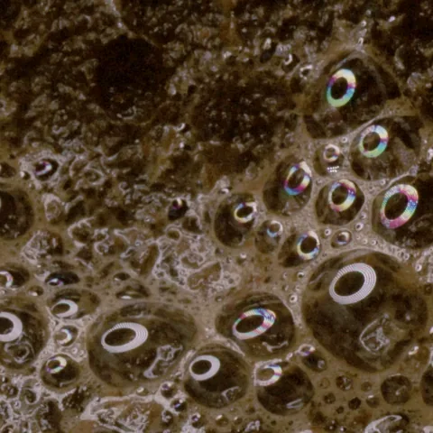
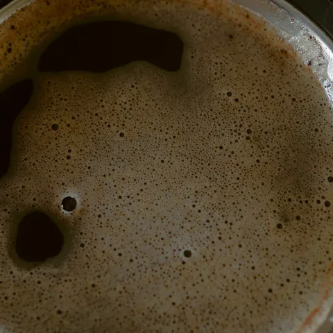
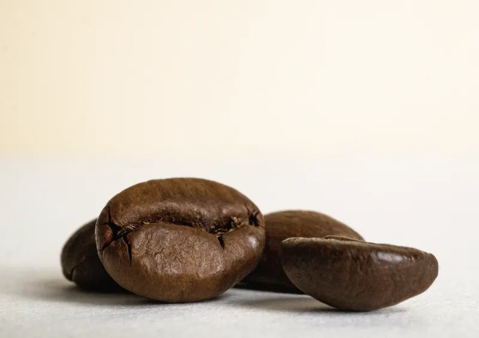
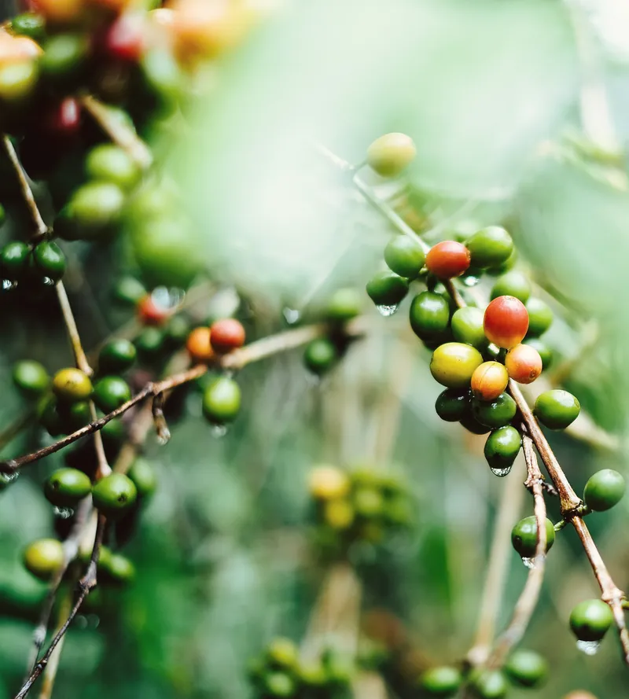
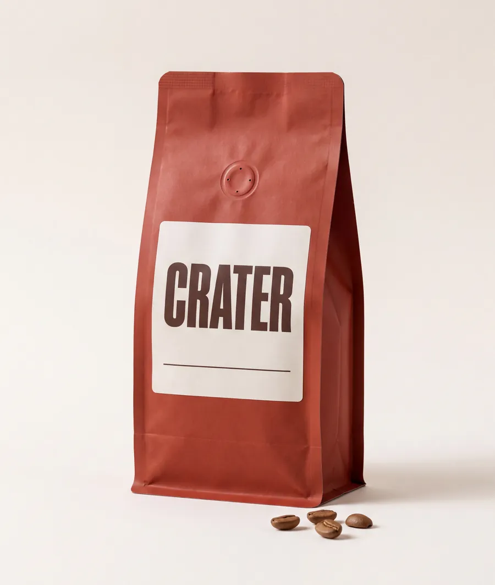

Press Pour and watch in real time. Nothing is sped up.
The proof takes forty-five seconds.
Hot water on fresh coffee sets off the bloom: the grounds rise, split and settle as the gas from roasting escapes. CRATER is one coffee from Acatenango, Guatemala, roasted on Mondays and sold whole.
36 g of water at 94 °C on 18 g of fresh grounds. Then hands off.
-

Rise
The bed swells into a dome, lifted by gas left over from the roast.
-

Crater
The dome splits. Bubbles break through, burst, and break through again.
-

Settle
The gas runs out. The bed sinks, goes still, and waits for the rest.
Stale coffee lies flat.
Roasting fills every bean with carbon dioxide. It seeps out slowly for weeks, and fast once the bean is ground.
When hot water reaches fresh grounds, the gas still inside rushes out at once and lifts the bed. That is the bloom. It is the one sign of freshness you can check with your own eyes, and no label can fake it.
It also clears the way for the brew. While gas streams out, water can’t get in, so forty-five seconds of waiting lets the rest of the water reach every ground evenly.

How the bloom changes as coffee ages
- Days 4 to 14 after roastingIt rises hard and splits wide.
- Weeks 3 to 5It still rises, more gently.
- After about six weeksIt barely moves.
CRATER is roasted on Mondays and posted on Tuesdays, so every bag arrives with its best weeks ahead of it.
Grown in ash.
Acatenango Valley, Guatemala. Across the ravine, Volcán de Fuego sends up a puff of ash most hours of most days.
The ash drifts down onto the farms. Over centuries it weathers into soil that is dark, loose and rich in minerals, and that holds water through the dry months from November to April.
Coffee grows slowly up here, and slow coffee is dense coffee: more sugar in the bean, and a bean that holds on to its gas longer after roasting.
- Region
- Acatenango Valley, Chimaltenango
- Altitude
- 1,500 to 1,900 m
- Next door
- Volcán de Fuego, 3,763 m, active
- Varieties
- Bourbon and Caturra
- Process
- Washed, dried on patios
- Harvest
- December to March


One coffee, one bag.
Panela, blood orange and cocoa nib, with a clean, drying finish.
- Weight
- 250 g, whole beans
- Roast
- Light to medium, for filter
- Roasted
- Mondays, in Singapore. Next: Monday 28 September
- Posted
- Tuesday 29 September, arriving within two days
- At its best
- From day 4 to about day 35 after roasting
- Price
- S$26 a bag, or S$23.40 on a subscription
We send whole beans unless you ask us to grind them. Ground coffee lets go of its gas within hours, and most of the bloom goes with it.
The small round valve on the front lets gas out and keeps air from getting in. If you squeeze a fresh bag gently, you can smell it working.
Buy a bagSee it in your own cup.
- 18 g of CRATER, ground medium-fine, about like sea salt
- 300 g of water at 94 °C, around thirty seconds off the boil
- A cone dripper and a paper filter, rinsed with hot water first
-
Pour 36 g, twice the weight of the coffee: just enough to wet every ground. Then watch it rise.
Time it with the film -
Pour in slow circles to 180 g.
-
Pour to 300 g. Give the dripper one gentle swirl.
-
The bed drains flat. That’s your cup.